Skills
- Programming languages: Python, SQL, C#, JavaScript, PHP, Java, C, C++, Golang, Dart
- Web & Frameworks: React, .NET Core, Flutter, Bootstrap, HTMX, HTML, CSS
- Databases: PostgreSQL, MySQL, Microsoft SQL Server, MongoDB, Qdrant, SQLite
- AI & Machine Learning: RAG, NLP, K-Means, Decision Tree, XGBoost, Scikit-learn
- Other: Docker, Git, GitHub, Azure DevOps, Postman, Figma, Spark, Pandas, Numpy, Matplotlib, Streamlit
- Communication Languages: Khmer (Native), English (Intermediate), Thai (Advanced)
Education
Prince of Songkla University, Pattani Campus
Jul 2022 - PresentBachelor of Mathematics and Computer Science
Major: Data Science
Cumulative GPA: 3.68/4.0 | First Class Honors | View Transcript
Expected official graduation - April 2026
Work Experience
AI Engineer Cooperative Internship at Max Savings (Thailand) Co., LTD (Bangkok, Thailand)
November 2025 - March 2026 (4 months)
Built an end-to-end intelligent customer service chatbot using RAG to provide context-aware responses.
Accomplishments:
- Built a full-stack web application using Blazor WebAssembly and .NET Core with real-time streaming chat via SignalR, supporting both desktop and mobile platforms.
- Implemented a multi-document RAG pipeline with hybrid search (Vector + BM25), enabling the system to retrieve context from multiple documents simultaneously.
- Designed a RAG evaluation pipeline comparing 3 chunking strategies (fixed, content-aware, semantic), scored with NLP metrics (BLEU, ROUGE, METEOR) to select the optimal retrieval configuration.
- Optimized response time by 27x (850ms → <100ms) through intelligent caching and question classification, reducing unnecessary document searches.
Full Stack Developer at Biomass Exchange Co., LTD (Bangkok, Thailand)
April 2025 - July 2025 (3 months)
Accomplishments:
- Developed an asynchronous email system with Golang that automates user communications and sends notifications efficiently.
- Led database schema design for notification features, ensuring data integrity and scalability to support growing transaction volumes.
- Built a booking history feature with full CRUD operations, enabling users to manage, edit, and track transaction records efficiently.
Technical Assistant at Prince of Songkla University, Hat Yai Campus (Hat Yai, Thailand)
13 December 2024 - 15 December 2024
- Supported workshops on Python and robotics for 50+ students at Programming Camp.
- Assisted participants with debugging, problem-solving, and logic development.
Leadership Experience & Activities
International English Exchange Program (Universiti Malaysia Kelantan), Kelantan, Malaysia
08 September 2025 - 14 September 2025
- Enhanced English communication skills through international workplace training.
- Led group discussions and team projects to build mutual understanding and effective participation.
- Built international relationships while representing Cambodian culture.
Projects
ChatBotRAG — Document Question Answering Chatbot
February 2026
A full-stack RAG chatbot built with .NET 10, Blazor WebAssembly, and SignalR. Upload PDF, TXT, or Markdown files and chat with them in real time using local Ollama models — no cloud dependency, full privacy.
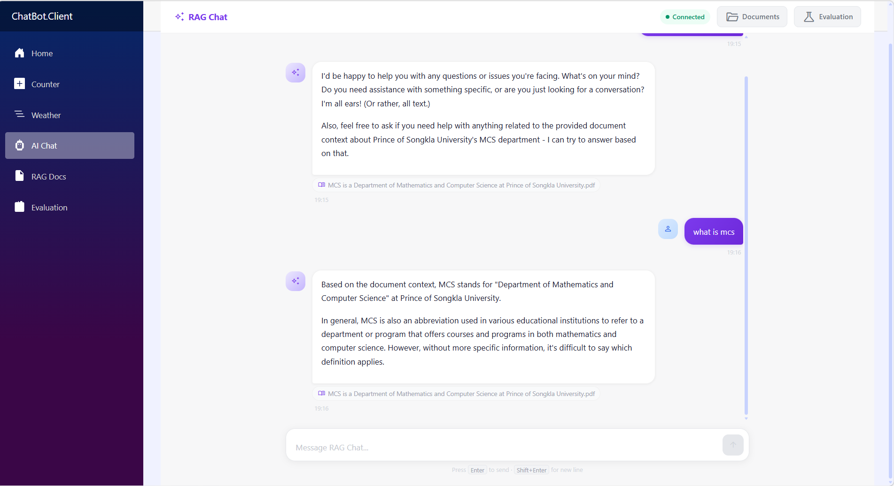
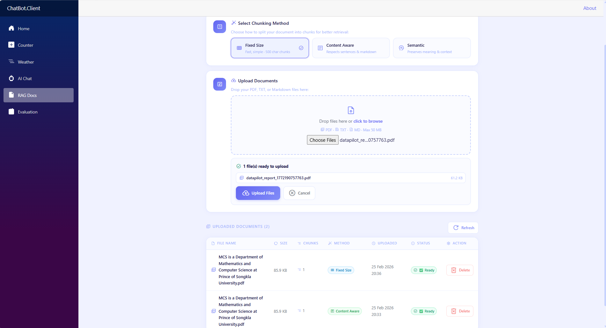
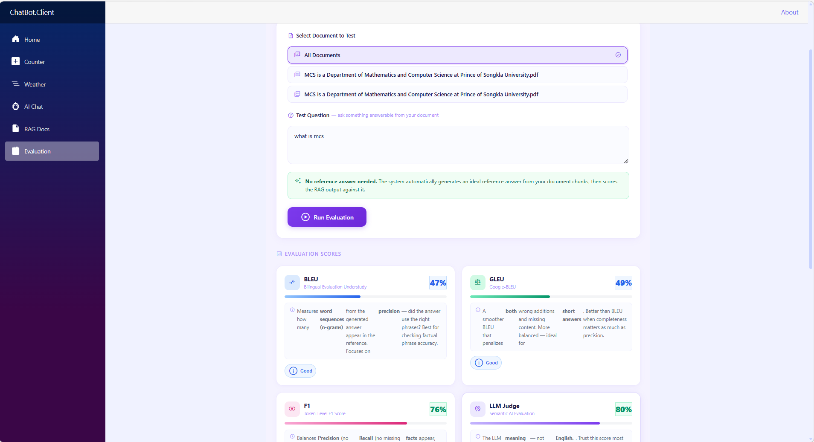
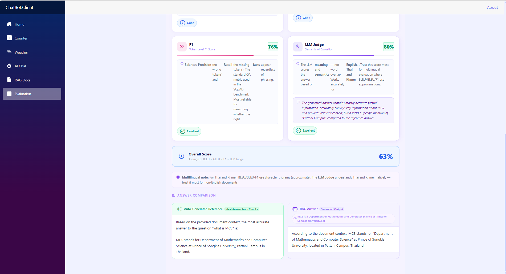
Key Features:
- Built a full-stack web application using Blazor WebAssembly and ASP.NET Core with real-time token-by-token streaming chat via SignalR.
- Implemented hybrid search (Vector + BM25 with configurable weights) fusing semantic and keyword retrieval for more accurate document answers.
- Supported 3 chunking strategies (FixedSize, ContentAware, Semantic) with multilingual tokenization for English, Thai, and Khmer.
- Built a RAG evaluation pipeline scoring answer quality automatically using BLEU, GLEU, F1, and LLM Judge — no reference answer required.
- Engineered an in-memory embedding cache with startup pre-warming, eliminating repeated database round trips at query time.
RAG Architecture (How It Works)
- Upload — Document split into chunks using the selected strategy.
- Embed — Each chunk converted to a 1024-dim vector via
mxbai-embed-large. - Store — Vectors saved in SQL Server with chunk text and chunking method.
- Cache — Vectors loaded into RAM on first query and stay cached until restart.
- Query — User question embedded and hybrid search runs:
- Vector search — cosine similarity against cached embeddings (70% weight)
- BM25 search — keyword matching against chunk text (30% weight)
- Fusion — scores combined:
final = 0.7 × vector + 0.3 × bm25
- Retrieve — Top-K chunks above similarity threshold returned.
- Generate — Retrieved chunks sent to
llama3.2:3bas context. - Stream — LLM response sent token-by-token to client via SignalR.
Chunking Strategies
- FixedSize — Splits text into fixed 500-char chunks with 100-char overlap. Fast, works for most documents.
- ContentAware — Respects sentence boundaries, markdown structure, and paragraphs (100–1000 chars). Best for structured documents.
- Semantic — Groups sentences by topic coherence using word-overlap similarity (150–1200 chars). Best for dense research papers.
Multilingual Support (English, Thai, Khmer)
- English — word tokenization with stop word removal for BM25.
- Thai & Khmer — character trigram (n-gram) tokenization since these languages have no spaces between words.
- Auto-detects script per text segment, handling mixed-language documents correctly.
- All 3 chunking strategies support language-specific sentence boundaries (Thai ๆ/ๆ markers, Khmer ។ terminator).
In-Memory Embedding Cache
- Registered as a Singleton — holds shared RAM state across all requests.
- On first query: loads ALL ready chunks from SQL Server, deserializes embeddings into
float[], stores inConcurrentDictionary. - Every query after: reads directly from RAM — no DB queries, no JSON parsing.
- Partial updates: uploading a new document adds only new chunks; deleting removes only that document's chunks.
- Startup pre-warming via
WarmUpAsync()so the first user query is already fast. - Cache stats available at
GET /api/documents/cache-stats— shows total chunks, documents, and estimated RAM usage.
RAG Evaluation Pipeline
- No reference answer needed — the system auto-generates one from retrieved chunks via LLM.
- Pipeline: Hybrid search → LLM generates reference answer → LLM generates RAG answer → BLEU/GLEU/F1 compare both → LLM Judge scores semantic quality.
- BLEU — n-gram precision, checks factual phrase accuracy.
- GLEU — balanced precision + recall, penalizes wrong additions and missing content.
- F1 — token overlap, standard QA benchmark metric (SQuAD).
- LLM Judge — semantic quality scored by LLM (0–10 normalized to 0–1), reliable for Thai and Khmer.
- Evaluation makes 3 LLM calls: reference generation, RAG answer generation, and LLM judge scoring.
Tools / Technologies:
- Frontend: Blazor WebAssembly (.NET 10)
- Backend: ASP.NET Core Web API (.NET 10), SignalR, Entity Framework Core
- LLM & Embeddings: Ollama (llama3.2:3b, mxbai-embed-large), OllamaSharp, Microsoft.Extensions.AI
- Database: SQL Server / LocalDB
- PDF Parsing: PdfPig
- Markdown: Markdig
- Search: Hybrid Vector + BM25 with RRF fusion
- Languages Supported: English, Thai, Khmer

A full-stack RAG chatbot built with FastAPI and React. Upload documents and chat with them in real time using local Ollama models — supports English, Thai, and Khmer documents with automatic RAG/LLM routing.
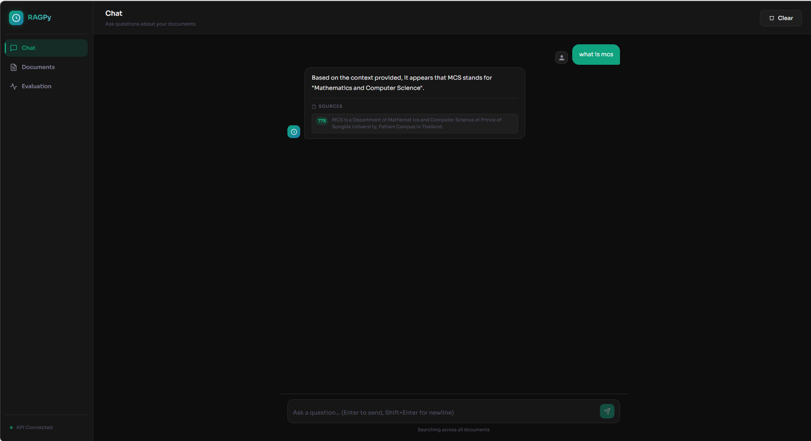
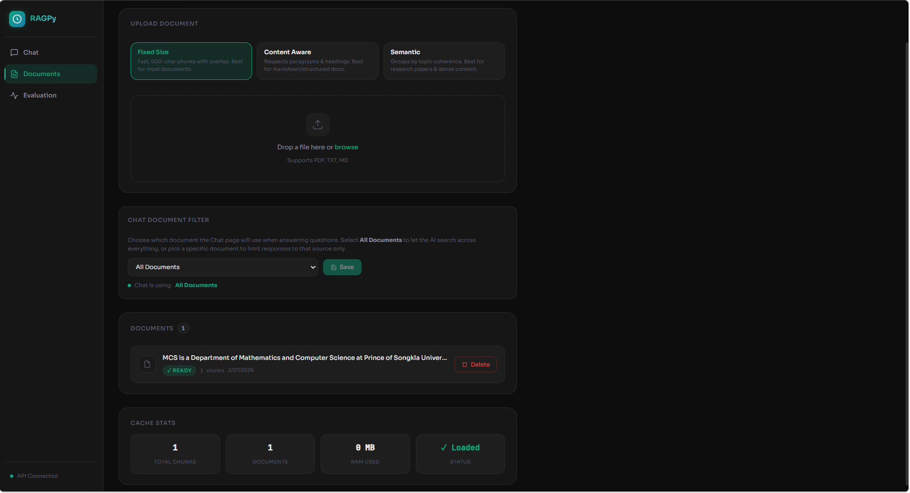
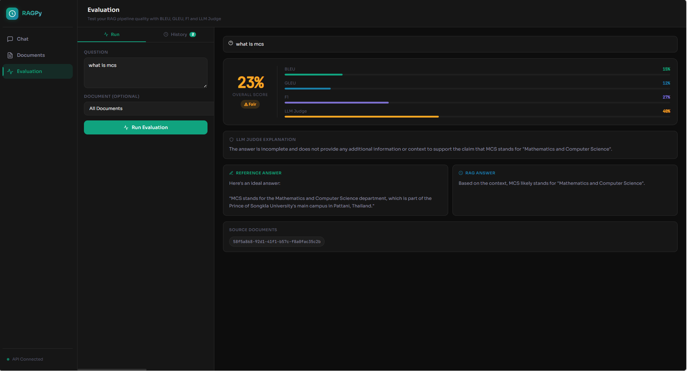
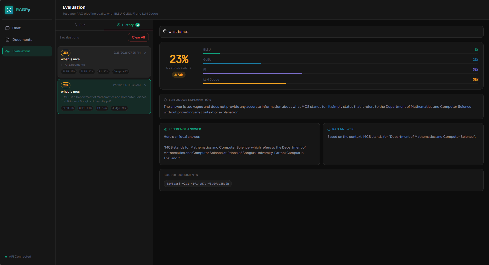
Key Features:
- Built a full-stack web application using React + Vite (frontend) and FastAPI Python (backend) with real-time token-by-token streaming chat via WebSocket.
- Implemented intelligent RAG routing — automatically decides whether to use document context or pure LLM based on hybrid search confidence score (threshold 0.65).
- Supported 3 chunking strategies (FixedSize, ContentAware, Semantic) with multilingual tokenization for English, Thai (pythainlp), and Khmer (character trigrams).
- Built a RAG evaluation pipeline scoring answer quality using BLEU, GLEU, F1, and LLM Judge — auto-generates reference answers with no manual input required.
- Engineered an in-memory embedding cache with startup pre-warming and partial updates (add/remove per document) to eliminate repeated database round trips.
Intelligent RAG Routing
- System automatically decides whether to answer with document context or LLM-only — no manual switching needed.
- Question embedded → hybrid search runs across all cached chunks → scores calculated.
- If best chunk score ≥ 0.65: answer uses LLM + RAG context, sources shown in chat.
- If no chunks pass threshold: LLM answers from its own knowledge only, no sources shown.
- Prevents irrelevant document context from being forced into unrelated answers.
- Threshold configurable in
rag_service.py— lower for more RAG, higher for stricter matching.
Hybrid Search (Vector + BM25)
- Combines two complementary retrieval methods: Vector Search (cosine similarity, 70%) and BM25 keyword search (30%).
- Formula:
final = 0.7 × vector_score + 0.3 × bm25_score - Vector search handles semantic meaning and paraphrasing; BM25 handles exact terms, technical names, and IDs.
- Weights configurable via
.env—VECTOR_WEIGHTandMIN_SIMILARITY_THRESHOLD.
Chunking Strategies
- FixedSize — 500-char chunks with 100-char overlap. Fast, good for most documents.
- ContentAware — Respects headings, paragraphs, and sentence terminators (100–1000 chars). Best for markdown and structured docs.
- Semantic — Groups sentences by topic-overlap similarity (150–1200 chars). Best for research papers and dense content.
Multilingual Support (English, Thai, Khmer)
- English — word tokenization with stop word removal for BM25; punctuation-based sentence splitting for chunking.
- Thai — uses
pythainlpword tokenizer (newmm engine) for BM25 and sentence tokenizer for chunking; trigram fallback if not installed. - Khmer — character trigram tokenization for BM25; splits on ។ ៕ ៖ sentence terminators for chunking.
- Auto-detects language per text segment using Unicode range detection.
In-Memory Embedding Cache
- Singleton service — holds all embeddings as
numpy float32arrays in a thread-safeConcurrentDictionary. - Startup pre-warming: loads all Ready chunks from SQL Server before first request.
- Partial updates: uploading a new document adds only its chunks; deleting removes only that document's chunks — no full reload needed.
- Cache stats endpoint:
GET /api/documents/cache-stats— total chunks, documents, and estimated RAM. - Memory estimate: ~4MB per 1,000 chunks, ~40MB per 10,000 chunks.
RAG Evaluation Pipeline
- No reference answer needed — LLM auto-generates an ideal reference from retrieved chunks.
- Pipeline: Hybrid search → LLM generates reference → LLM generates RAG answer → BLEU/GLEU/F1 score both → LLM Judge scores semantic quality.
- BLEU — n-gram precision for factual phrase accuracy.
- GLEU — balanced precision + recall, penalizes wrong additions and missing content.
- F1 — token overlap, standard SQuAD benchmark metric.
- LLM Judge — scores 0–10 normalized to 0–1, reliable for multilingual (Thai/Khmer) evaluation.
- Overall score = average of all 4 metrics.
Tools / Technologies:
- Frontend: React, Vite
- Backend: Python, FastAPI, SQLAlchemy, Alembic
- Real-time: WebSocket
- LLM & Embeddings: Ollama (llama3.2:3b, mxbai-embed-large)
- Database: SQL Server LocalDB
- PDF Parsing: PyPDF2
- Thai NLP: pythainlp
- Search: Hybrid Vector + BM25
- Languages Supported: English, Thai, Khmer
IoT-Based Chicken Farm Monitoring System
February 2024
Automated farm monitoring system with data streaming, validation, and intelligent alerting.
Key Features:
- Designed a real-time IoT monitoring system with automated data ingestion into MongoDB, enabling continuous tracking of poultry growth metrics for farm optimization.
- Developed a data validation pipeline filtering sensor readings to ensure 95% data accuracy, cleaning and preparing raw data for reliable analytics and insights.
- Built a real-time dashboard visualization and automated LINE notifications for growth anomalies, enabling proactive farm management and faster response to issues.
- Built an Interactive Analytics Dashboard using Shiny and Plotly, transforming raw time-series data into actionable insights through dual-line trend visualization and daily status classification.
Tools / Technologies:
- Backend & Database: MongoDB, Ubuntu Server
- Data Visualization: Shiny, Plotly
- IoT & Notifications: IoT Sensors, LINE Notify API
Jamoon Laundry Management System
March 2024
A web-based laundry management system for student-run laundry services with real-time machine availability, booking, and administrative analytics.
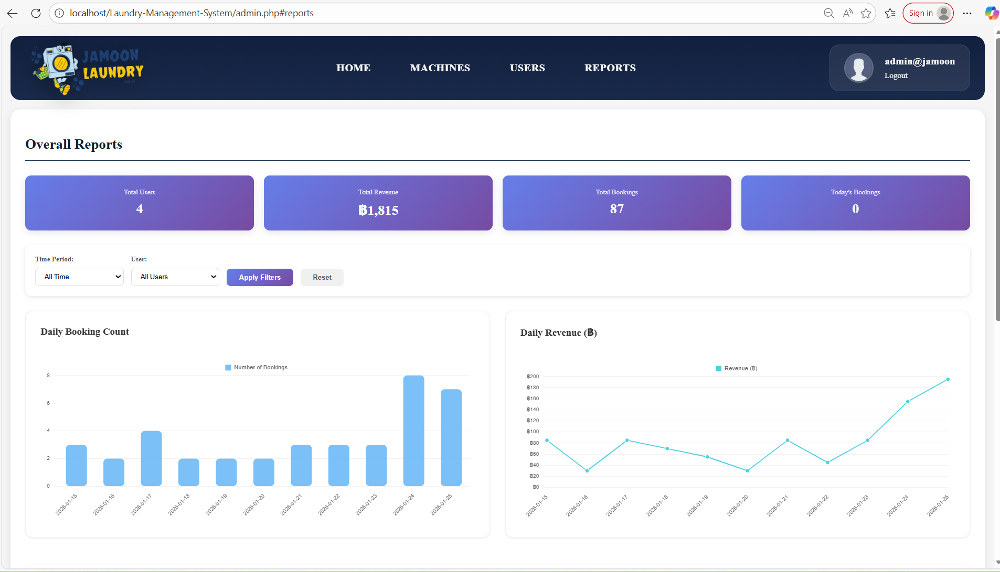
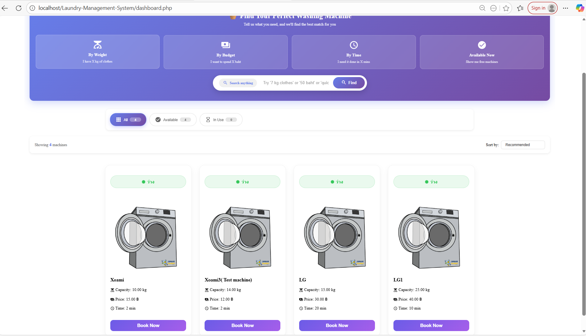
Key Features:
- Real-time washing machine status updates using AJAX without requiring page reloads.
- Engineered a "Smart-Reservation" logic featuring a 30-minute activation window with automated server-side cancellation, optimizing machine turnover and operational efficiency.
- Designed a relational database schema with complex foreign key constraints across user profiles, machine specifications, and transaction logs to ensure 100% data integrity.
- Developed an Administrative ERP Dashboard using Chart.js, transforming raw transaction data into actionable business intelligence through revenue analytics and usage pattern reporting.
Tools / Technologies:
- Backend: PHP
- Frontend: JavaScript, AJAX, HTML, CSS
- Database: MySQL
- Data Visualization: Chart.js
Jame - All-in-One Inventory & Sales Management App
September 2025
End-to-end mobile point-of-sale system with analytics dashboard and inventory management.
Key Features:
- Developed a comprehensive POS mobile application for department business management, integrating real-time barcode scanning and automated PDF receipt generation.
- Built an analytics dashboard with visual insights into revenue trends, product stocks, best-selling items, and profit margins to support data-driven business decisions.
- Managed product inventory with barcode-based stock updates, automated low-stock alerts, and real-time pricing calculations to streamline operations.
Tools / Technologies:

A zero-code AutoML platform. Upload a CSV, select a target column, and the system automatically cleans data, trains multiple ML models, selects the best one, and delivers a visual dashboard with downloadable PDF report and cleaned dataset.
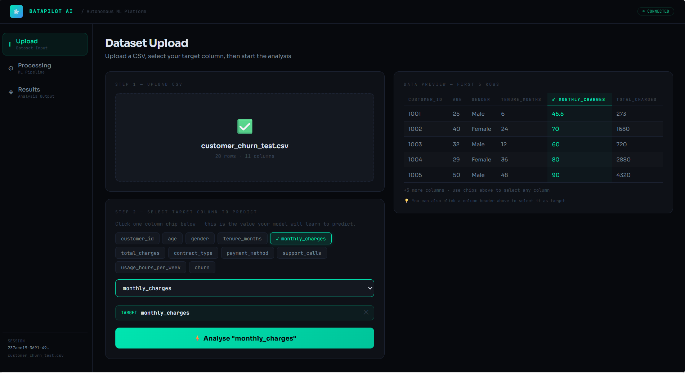
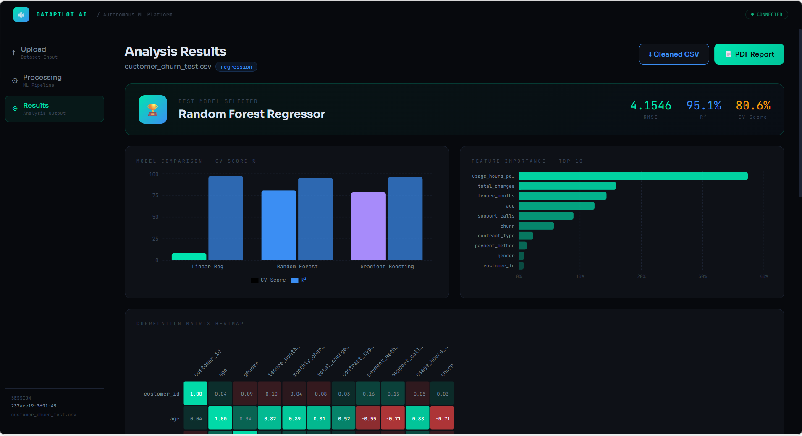
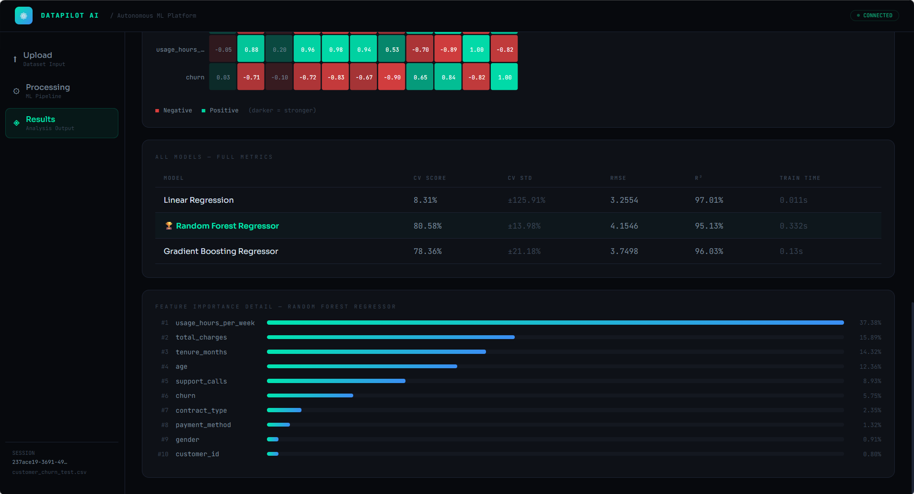
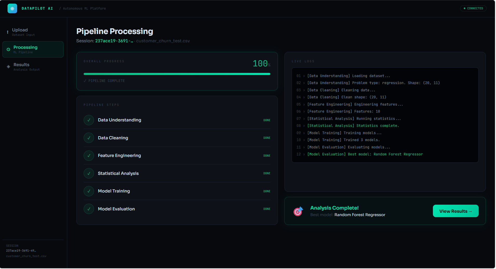
Key Features:
- Built a full-stack web application using React and FastAPI that runs a 6-stage ML pipeline automatically — data understanding, cleaning, feature engineering, statistical analysis, model training, and evaluation.
- Trained 3 models simultaneously (Logistic Regression, Random Forest, Gradient Boosting) for both classification and regression, selecting the best model by cross-validation score.
- Developed an interactive results dashboard with model comparison bar charts, feature importance visualization, and a Pearson correlation heatmap built in pure SVG.
- Implemented PDF report generation entirely in the browser using jsPDF, producing a full A4 report with metrics table, feature importance bars, and correlation heatmap without any server-side rendering.
ML Pipeline (6 Stages)
- Data Understanding — Detects column types, null %, and problem type (classification if target has ≤20 unique values or is string/bool, else regression).
- Data Cleaning — Removes duplicates, fills numeric nulls with median, fills categorical nulls with mode, applies LabelEncoder to categorical columns.
- Feature Engineering — Applies StandardScaler to numeric features, builds final X matrix and y vector.
- Statistical Analysis — Computes descriptive stats (mean, std, min, max, quartiles) and Pearson correlation matrix.
- Model Training — Trains 3 models simultaneously on the full training set.
- Model Evaluation — Runs k-fold cross-validation, evaluates on held-out test set, extracts feature importances, selects best model by highest CV mean score.
Models Trained
- Classification: Logistic Regression, Random Forest Classifier, Gradient Boosting Classifier
- Regression: Linear Regression, Random Forest Regressor, Gradient Boosting Regressor
- Classification metrics: Accuracy, F1 Score (weighted), ROC-AUC, CV Mean, CV Std, Train Time
- Regression metrics: RMSE, R², CV Mean, CV Std, Train Time
- Feature importance extracted from
feature_importances_(tree models) orcoef_(linear models) — top 15 features returned.
Frontend Architecture
- 4-file React architecture:
App.jsx(state + polling),Pages.jsx(upload + processing),ResultsPage.jsx(charts + downloads),constants.jsx(shared tokens). - Frontend polls
GET /api/v1/status/{session_id}every 2 seconds during processing to show live progress and pipeline logs. - Model comparison and feature importance charts built with Recharts.
- Correlation matrix heatmap built in pure SVG — no external chart library needed.
- PDF report generated fully in browser using jsPDF loaded from CDN — no npm install, no server-side rendering.
- Cleaned CSV downloaded via
GET /api/v1/download/{session_id}— backend re-runs cleaning pipeline and streams file back.
Deployment
- Fully containerized with Docker Compose — MongoDB + Backend + Frontend run with a single
docker compose up --buildcommand. - Frontend built with Vite into a static production bundle, served via nginx:alpine for optimal performance.
- Kubernetes manifests included in
k8s/directory for cloud deployment. - Environment configurable via
.env— CV folds, test size, file size limit, random seed all tunable without code changes.
Tools / Technologies:

A full-featured e-commerce web application supporting customer-facing functionality and a comprehensive administrative management system.
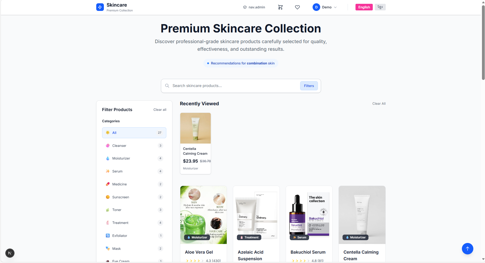
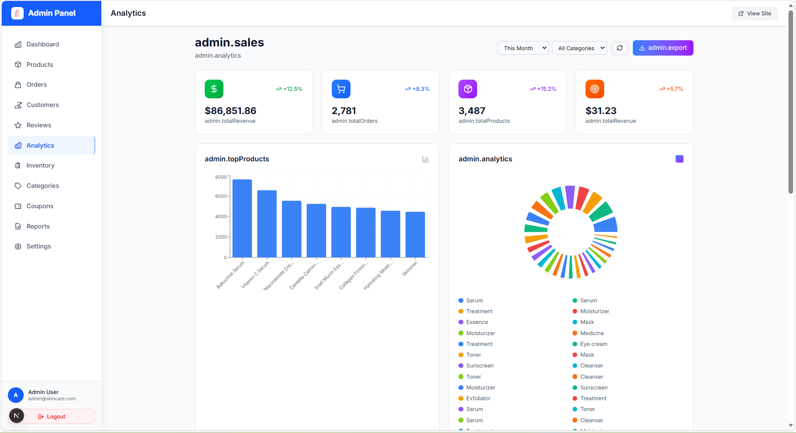
Key Features:
- Implemented customer-facing features including product browsing, shopping cart, wishlist, user authentication, profile management, and order history.
- Built a comprehensive admin panel with separate routing and layout for managing products, orders, customers, categories, inventory, coupons, reviews, and system settings.
- Dynamic routing for products, orders, and customer detail pages using Next.js App Router.
- Integrated a mock API and API abstraction layer to support development and testing workflows.
- Designed responsive layouts supporting desktop, tablet, and mobile devices.
- Supported 2 languages (English and Khmer) using i18next.
Tools / Technologies:
- Framework: Next.js
- Frontend: React, TypeScript, Tailwind CSS
- State Management: Context API
- Internationalization: i18next
- Data Visualization: Chart.js